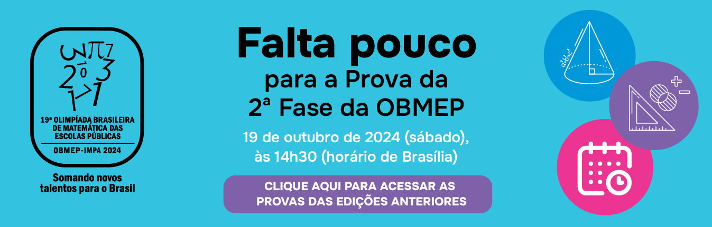
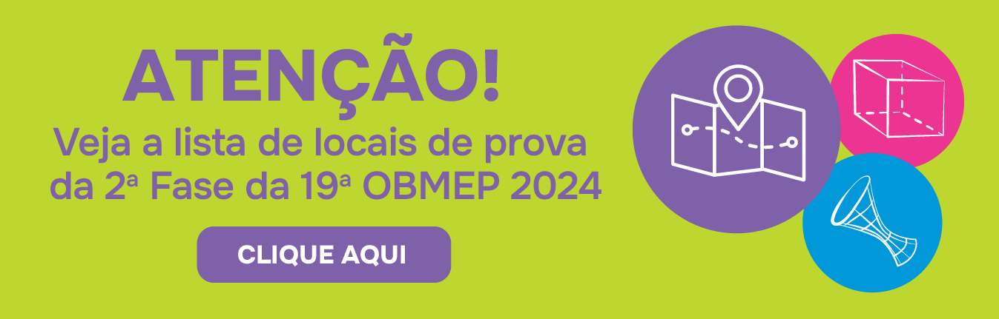
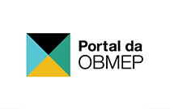
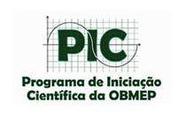
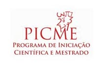
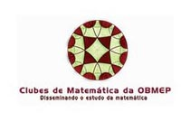
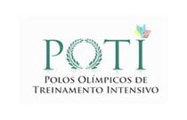
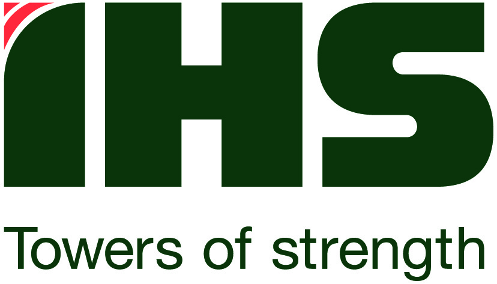
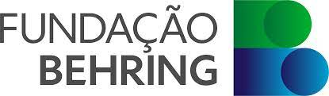

home
Quem Somos
arrow_drop_down
Apresentação
Calendário
Regulamento
Coordenadores Regionais
OBMEP em Números
Estudos sobre a OBMEP
Premiados
arrow_drop_down
Premiados da OBMEP
Cerimônias Nacionais
Cerimônias Regionais
Material Didático
arrow_drop_down
Provas e Soluções
Banco de Questões
Apostilas do PIC
Simulados
Vídeos
Matemática Mundo Afora
Links e outras Olimpíadas
Programas e Portais
arrow_drop_down
PIC - Programa de Iniciação Científica Jr.
Coordenadores Orientadores PIC
Portal da OBMEP
Olimpíada Mirim
Portal Clubes de Matemática
POTI - Polos Olimpícos de Treinamento Intensivo
PICME - Programa de Iniciação Científica e Mestrado
Bolsa-Tech Funcação Behring - OBMEP
Bolsa IHS - OBMEP
Imprensa
arrow_drop_down
OBMEP na Mídia
Divulgue a OBMEP
Atendimento à Imprensa
Histórias Inspiradoras
Escolas Inscritas
Acesso ao Sistema
Perguntas Frequentes
enhanced_encryption
Acesso Restrito
Administração
18º PIC
Notícias da 2º Fase da OBMEP 2024


Programas, Portais e Apoiadores






